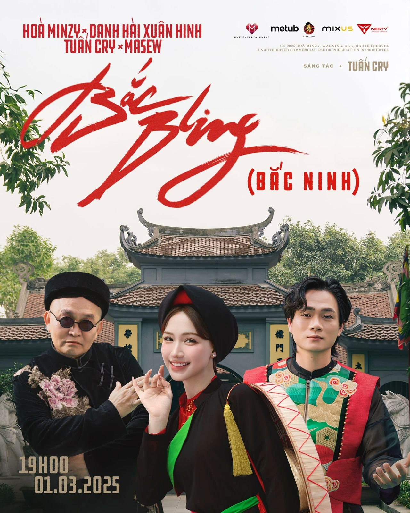
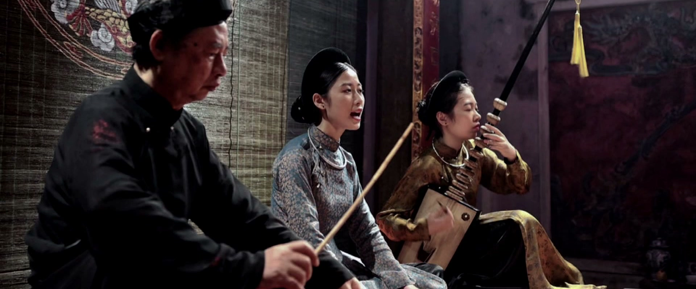
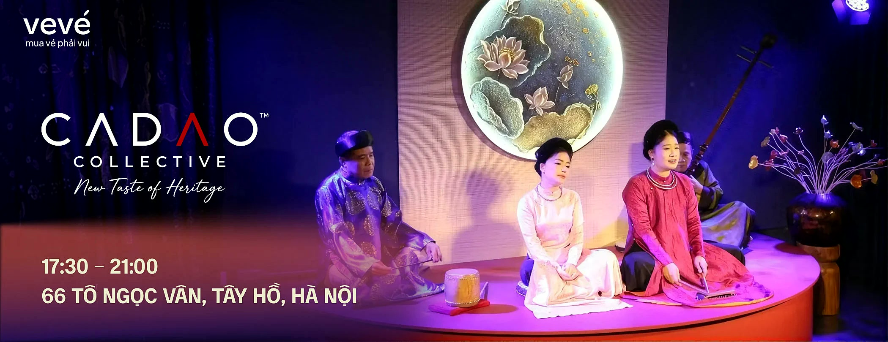
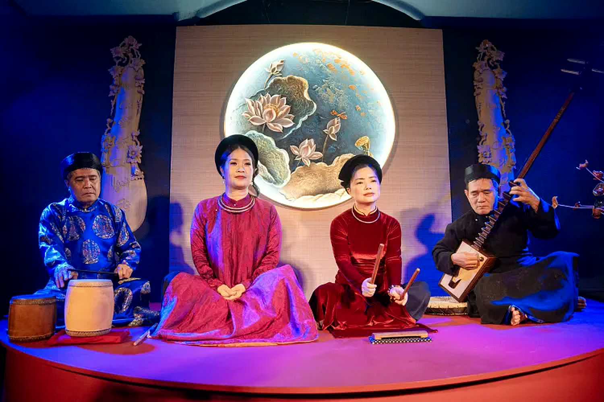
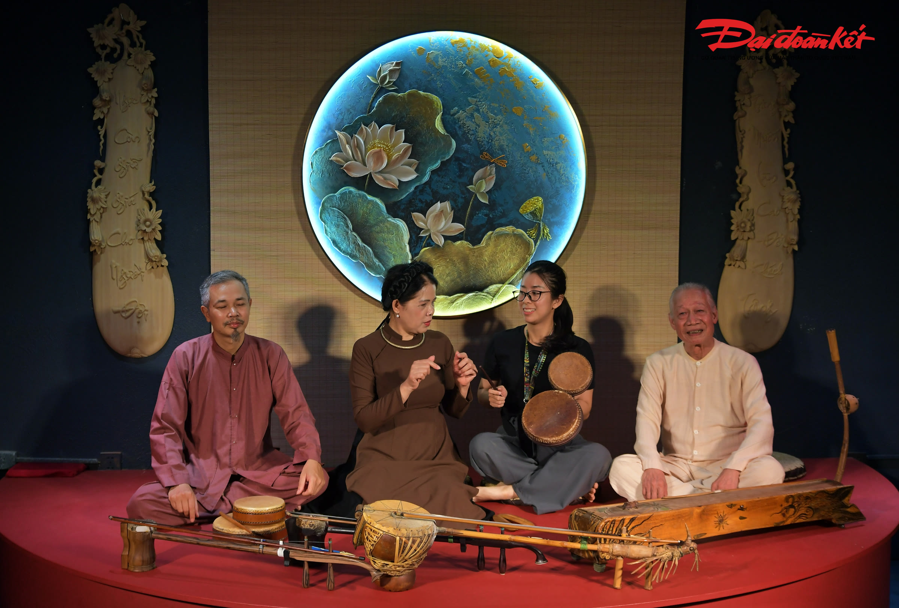
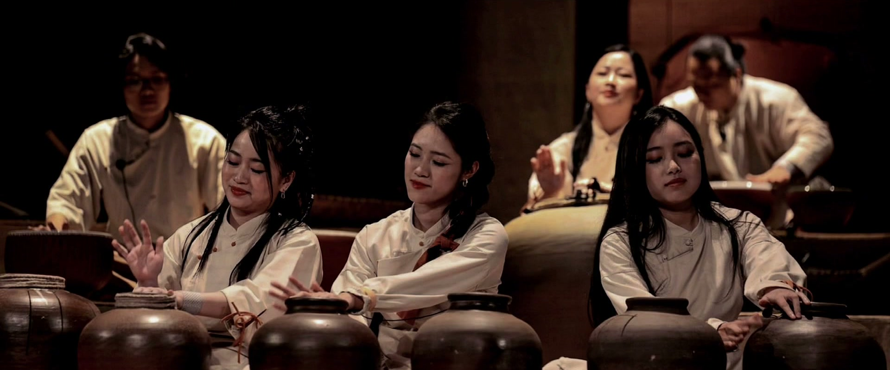
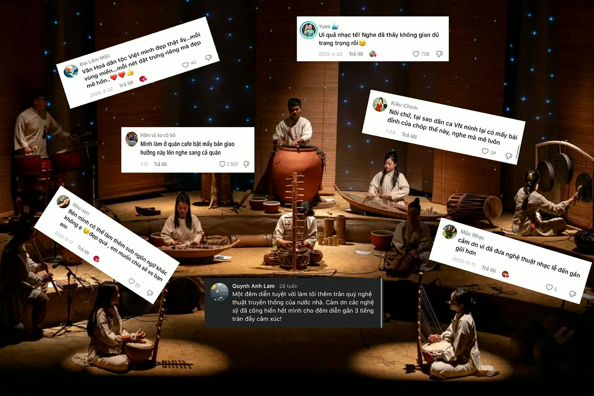
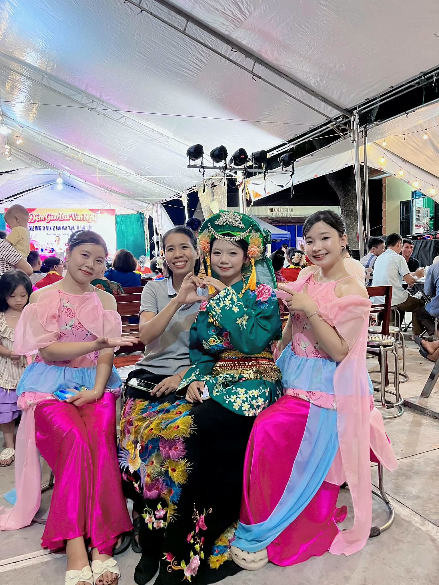
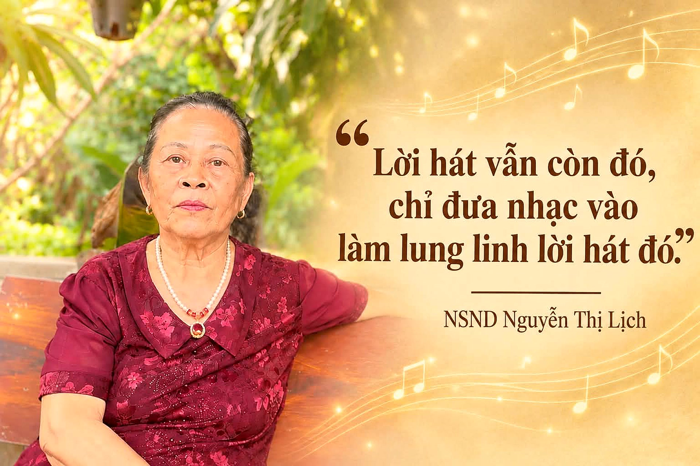

Khi những giai điệu xưa khoác lên mình diện mạo mới — đâu là ranh giới giữa sáng tạo và đánh mất giá trị nguyên bản?
Cuộn xuống
E-Magazine · Tháng 11 · 2026 Video: Nhóm tác giả thực hiện
Từ những làn điệu dân ca quen thuộc đến các bản phối hiện đại trên mạng xã hội, âm nhạc truyền thống đang có thêm nhiều cách tiếp cận đến với giới trẻ. Những giai điệu xưa được làm mới, lan tỏa rộng rãi và góp phần đưa văn hóa dân tộc đến gần hơn với thế hệ trẻ.
Nhưng khi những giai điệu xưa khoác lên mình diện mạo mới, đâu là ranh giới giữa sáng tạo và đánh mất giá trị nguyên bản?
Thực hiện: Nhóm 8 – NMCNBCS – PTIT·Đọc ~10 phút
Ảnh: Báo Đại Đoàn Kết
01
Bức tranh nghệ thuật thực tế
Từ MV triệu view đến sân khấu truyền hình — di sản đang chuyển mình thành chất liệu giải trí thịnh hành.
Sản phẩm âm nhạc cá nhânLội ngược dòng trên không gian số
Từng bị xem là lỗi thời và đóng khung trong không gian hàn lâm, âm nhạc truyền thống nay đã lội ngược dòng ngoạn mục trên không gian số nhờ sức sáng tạo của thế hệ trẻ.
Từ những bước đi tiên phong của Hoàng Thùy Linh với Để Mị nói cho mà nghe hay See Tình, những bản hit đậm màu sắc văn hóa như Thị Mầu, Bắc Bling của Hòa Minzy, cho đến các bản phối mang âm hưởng dân gian gây sốt của Masew qua À Lôi, di sản đã chuyển mình thành chất liệu giải trí thịnh hành.

Từ trái sang: sân khấu Anh Trai Vượt Ngàn Chông Gai; tiết mục Trống Cơm; poster MV Bắc Bling (Hòa Minzy, Xuân Hinh, Tuấn Cry). Ảnh: Anh Trai Vượt Ngàn Chông Gai; ghép từ video của Asia Entertainment và Yeah1 Music; poster MV Bắc Bling – Hòa Minzy
Bắc BlingSee TìnhÀ LôiThị MầuTrống CơmDạ Cổ Hoài LangĐào LiễuẾch Ngoài Đáy GiếngĐể Mị nói cho mà ngheBắc BlingSee TìnhÀ LôiThị MầuTrống CơmDạ Cổ Hoài LangĐào LiễuẾch Ngoài Đáy GiếngĐể Mị nói cho mà nghe
Điểm chạm di sản quy mô lớnKhi tuồng, chèo, cải lương lên sóng giờ vàng
Sức hút ấy bùng nổ mạnh mẽ hơn qua các sân khấu truyền hình thực tế như Anh Trai Vượt Ngàn Chông Gai hay Em Xinh "Say Hi", nơi những làn điệu tuồng, chèo, cải lương hay ca trù được tái sinh sống động qua loạt tiết mục gây bão như Trống Cơm, Dạ Cổ Hoài Lang, Đào Liễu hay Ếch Ngoài Đáy Giếng.
Từ sức nóng của không gian số và sóng truyền hình, dòng chảy ấy đang tạo ra hiệu ứng tích cực khi kéo thế hệ trẻ quay trở lại lấp đầy các nhà hát truyền thống, biến di sản thành niềm tự hào đương đại. Không chỉ dừng lại ở những con số triệu view, các giai điệu mang âm hưởng dân gian giờ đây đã trở thành tâm điểm bàn luận của công chúng, phủ sóng rộng rãi trên mọi nền tảng mạng xã hội.
Ảnh: Anh Trai Vượt Ngàn Chông GaiẢnh: Asia Entertainment, Yeah1 Music

Ảnh: Nhóm tác giả thực hiện
Di sản đã trở thành niềm tự hào đương đại — không chỉ trên màn hình, mà cả trong khán phòng.

Ảnh: Vevé / CADAO Collective
Không gian sáng tạo của người trẻTừ khán giả thành người “làm” di sản
Bên cạnh các nhà hát nghệ thuật, dấu ấn nhập cuộc của người trẻ còn mở rộng sang các không gian văn hóa đương đại. Không dừng lại ở việc mua vé lấp đầy khán phòng, thế hệ mới đang trực tiếp dấn thân vào từng khâu tổ chức, truyền thông và bước lên sân khấu thực hành.
Điển hình như CADAO Collective tại không gian ven hồ Tây — nơi các bạn trẻ kết hợp thưởng trà, ẩm thực bản địa với việc tổ chức các đêm diễn di sản như Xẩm, Ca Trù hay Rối. Sự nhập cuộc chủ động này đã biến các di sản diễn xướng thành điểm hẹn văn hóa gần gũi.

Đêm diễn tại CADAO Collective. Ảnh: Nhóm tác giả thực hiện

Ảnh: Báo Đại Đoàn Kết
Ghi nhận thực tế
Tại CADAO Collective
Một đêm diễn ca trù tại CADAO Collective (66 Tô Ngọc Vân, Tây Hồ). Video: Nhóm tác giả thực hiệnẢnh: Anh Trai Vượt Ngàn Chông Gai
02
Mạng xã hội nói gì?
Từ nỗi lo mai một đến làn sóng hồi sinh trên mạng xã hội.

#TikTok#Facebook#YouTube#Instagram
Ảnh: Anh Trai Vượt Ngàn Chông Gai
Từng đối diện nhiều thách thức
Sự phổ biến của nhạc trẻ, K-pop và âm nhạc quốc tế khiến các loại hình như tuồng, chèo, ca trù, hát xẩm hay quan họ dần trở nên xa lạ với một bộ phận giới trẻ. Tuy nhiên, mạng xã hội đang mở ra hướng tiếp cận mới: chất liệu dân gian được đưa vào video ngắn, bản phối hiện đại và sản phẩm âm nhạc trực tuyến.
Theo nghiên cứu “Tái trình hiện văn hóa truyền thống trên mạng xã hội từ góc nhìn của giới trẻ Việt Nam” của TS. Đinh Mỹ Linh (Viện Hàn lâm Khoa học xã hội Việt Nam), giới trẻ đang chủ động đưa yếu tố truyền thống vào nội dung sáng tạo trên TikTok, Facebook, Instagram và YouTube.
Những làn điệu quan họ, ví dặm, chầu văn hay bản phối như Trống Cơm, tiết mục của Phương Mỹ Chi, MV Bắc Bling đã thu hút sự chú ý của đông đảo khán giả.
Sự trở lại của âm nhạc truyền thống nhận được nhiều phản ứng tích cực. Nhiều bạn trẻ thích thú khi đàn tranh, đàn bầu, sáo trúc hay những làn điệu dân ca xuất hiện trong các bản phối hiện đại. Với họ, âm nhạc truyền thống không còn quá xa lạ mà trở thành một phần của xu hướng giải trí.
Tuy nhiên, việc kết hợp cũng gây ra những ý kiến trái chiều. Một bộ phận công chúng lo ngại các yếu tố truyền thống bị khai thác hời hợt — quá chú trọng nhạc điện tử, tiết tấu sôi động mà chỉ dùng nhạc cụ dân tộc làm điểm nhấn.
Trong khi đó, giá trị của âm nhạc truyền thống không chỉ nằm ở âm thanh nhạc cụ mà còn ở làn điệu, kỹ thuật biểu diễn và bản sắc văn hóa.

Bình luận của khán giả trên mạng xã hội. Ảnh: Nhóm tác giả tổng hợpẢnh: Ghép từ video của Asia Entertainment và Yeah1 Music
03
Nghe lại “Trống Cơm”
Người trẻ thích bản mới, nhưng vẫn nhớ bản cũ.
Người tham gia được nghe hai đoạn nhạc dài khoảng một phút của cùng một bài dân ca. Một đoạn là bản truyền thống, đoạn kia là phiên bản phối mới trong chương trình Anh trai vượt ngàn chông gai. Phần lớn họ chỉ thỉnh thoảng hoặc hiếm khi nghe nhạc truyền thống.
“Vẫn là bài Trống cơm, nhưng có phần hiện đại hơn.”
Một bạn trẻ 18–25 tuổiPhiếu khảo sát với hai bản Trống Cơm. Ảnh: Nhóm tác giả thực hiện
Điểm yêu thích (thang 5)
Bản phối được chấm cao hơn
Bản mới
0
Bản gốc
0
Bản mới đạt 3,98/5 điểm, bản truyền thống đạt 3,43/5.
Nhận ra cùng một bài
0%
người nghe nhận ra đó vẫn là cùng một bài hát, dù cách thể hiện đã khác nhiều.
Bạn thích bản nào hơn?
Bản mới47,5%
Thích như nhau32,5%
Bản gốc20%
Gần một nửa chọn bản mới, một phần ba thích như nhau, chỉ một phần năm chọn bản cũ.
Mức độ “gần gũi”
Mới lạ không có nghĩa là gần gũi hơn
3,70
3,68
Bản mớiBản gốc
Nhiều bạn nhắc đến tuổi thơ khi nghe bản truyền thống — “cảm thấy hoài niệm tuổi thơ” — còn bản mới được mô tả là bắt tai, sôi động, mới lạ.
Làm mới nhưng không mất gốc
0%
cho rằng phối lại giúp nhiều người biết đến nhạc truyền thống hơn. 17,5% thấy “vừa có lợi vừa có hại”; chỉ 5% lo bản sắc bị mất.
Lời nhắn tới người làm nhạc
“Tránh phối quá đà dẫn đến hủy hoại giai điệu truyền thống ban đầu.”
“Phải sáng tạo, chứ an toàn quá không ai nghe đâu.”
Hai ý kiến nghe như đối nghịch, nhưng cùng nói một điều: người trẻ muốn truyền thống được làm mới mà không bị đánh mất.
Để có cái nhìn chân thực về sự tiếp nhận của thế hệ trẻ, chúng tôi đã thực hiện một khảo sát thực nghiệm với 40 bạn trẻ trong độ tuổi từ 18 đến 25. Họ được lắng nghe hai phiên bản của bài dân ca “Trống Cơm”: một bản thu âm truyền thống với dàn nhạc dân tộc và một bản phối hiện đại kết hợp nhạc điện tử. Kết quả phản ánh sự phân hóa thú vị trong tư duy thưởng thức:
Ưu tiên theo nhóm khán giả
Nhóm tìm hiểu văn hóa (15 người)
Bản gốc · 12Mới · 3
Nhóm yêu thích giải trí (25 người)
Gốc · 6Bản phối mới · 19
Số liệu cho thấy, trong khi những người có nền tảng tìm hiểu văn hóa vẫn trân trọng sự nguyên bản, thì đại đa số khán giả trẻ lại bị thu hút bởi sự mới mẻ, tiết tấu nhanh và cách xử lý âm thanh hiện đại.
Bản gốc mang lại cảm giác bình yên, như được trở về với không gian làng quê xưa. Nhưng bản phối mới lại khiến mình muốn nhún nhảy, muốn chia sẻ nó lên mạng xã hội.
Lưu ý: khảo sát gồm 40 bạn trẻ, chủ yếu là sinh viên, nên kết quả chỉ phản ánh nhóm người tham gia, không đại diện cho toàn bộ người trẻ. Một số bạn nhắc đến nghệ sĩ biểu diễn trong bản mới, và có ý kiến cho rằng âm thanh bản cũ chưa tốt, nên điểm số có thể chịu ảnh hưởng từ hai yếu tố này. Nguồn: khảo sát trực tuyến của nhóm, 28–30/10/2026.
Ảnh: Poster MV Bắc Bling – Hòa Minzy
04
Làm mới đến đâu thì còn là truyền thống?
Nỗi lo “mất chất” và cuộc tranh luận chưa có hồi kết.
Phần 1Khi di sản được đưa lên không gian số
Theo Quyết định số 1111/QĐ-TTg của Thủ tướng Chính phủ, Ngày Văn hóa Việt Nam được tổ chức trong giai đoạn 2026–2030. Kế hoạch của Bộ Văn hóa, Thể thao và Du lịch đặt trọng tâm vào truyền thông và ứng dụng công nghệ số, trong đó có chiến dịch “Hành trình trải nghiệm Văn hóa Việt 2026” kết nối các nhà sáng tạo nội dung và chuyên gia để lan tỏa văn hóa trên không gian mạng. Các triển lãm cũng được đổi mới bằng 3D Mapping và thực tế ảo, nhằm thu hút công chúng, đặc biệt là giới trẻ.
1/11/2026
Ra mắt Bản đồ số Văn hóa Việt Nam (CMAP)
Tối 1/11 tại Văn Miếu – Quốc Tử Giám, Bộ VHTTDL ra mắt nền tảng kết nối thông tin văn hóa trên môi trường số.
18–24/11/2026
Chuỗi hoạt động Ngày Văn hóa Việt Nam
Trọng tâm là truyền thông, công nghệ số, 3D Mapping và thực tế ảo để đưa di sản đến gần người trẻ.
2026–2030
Giai đoạn tổ chức theo QĐ 1111/QĐ-TTg
Bảo tồn không bị đặt đối lập với sáng tạo — nhận xét của một bài bình luận trên Báo Văn hóa.
Nghĩa là Nhà nước không chỉ cho phép người trẻ làm mới truyền thống, mà đang chủ động đi cùng họ trên các nền tảng số. Điều đó khiến câu hỏi “làm mới đến đâu thì còn là truyền thống” càng đáng đặt ra.
Phần 2 · Nỗi lo “mất chất”Ranh giới nằm ở đâu?
Trong khảo sát của chúng tôi, nỗi lo này là thiểu số. Nhưng nó không biến mất.
Cho rằng phối lại làm mất bản sắc
0%
2 / 40 người
Thấy vừa có lợi vừa có hại
0%
7 / 40 người
Ở câu nhắn gửi tự do, nhiều bạn chủ động dặn người làm nhạc phải giữ gìn bản sắc dù không ai gợi ý. Nói cách khác, người trẻ ủng hộ làm mới, kèm một điều kiện.
Điều kiện đó không phải chuyện riêng của người trẻ. Nó từng gây tranh luận ngoài đời thật.
2019
“Tứ Phủ”
MV của Hoàng Thùy Linh
Lo ngại
Ca sĩ Quế Vân cho rằng bài hát mang tên “Tứ Phủ” nhưng chỉ nói về một phủ, và cảm thấy có điều chưa ổn khi đưa tín ngưỡng thờ Mẫu linh thiêng vào âm nhạc giải trí. Lời ca mang ý trách móc, trong khi tích Cô Bơ là hình ảnh người con gái chung thủy chờ đợi, không oán giận ai.
Ủng hộ
Nhiều khán giả cho rằng cô đã góp phần đưa tín ngưỡng này đến gần hơn với mọi người qua âm nhạc.
6 năm
2025
“Bắc Bling”
MV của Hòa Minzy
Lo ngại
Có người cho rằng MV đang “phá” quan họ. Một số nghệ sĩ gắn bó với quan họ vẫn thấy tác phẩm có những điểm trừ.
Ủng hộ
Nhiều lời khen sự kết hợp truyền thống – hiện đại sáng tạo, trẻ trung. Có ý kiến phản bác rằng “Bắc Bling” không phải bài quan họ, mà là lời mời về Bắc Ninh tìm hiểu quan họ cổ và thăm thú xứ Kinh Bắc.
Ai có quyền quyết định đâu là “đúng chất”?
Giữ chuẩn mực & sự linh thiêng
Làm mới để đến với người trẻ
Hai vụ việc cách nhau sáu năm, nhưng cùng một câu hỏi. Người bảo vệ truyền thống lo sự linh thiêng và chuẩn mực bị phai nhạt. Người ủng hộ cho rằng nếu không làm mới, truyền thống khó đến được với người trẻ.
Kết quả khảo sát đứng ở giữa hai phía ấy: phần lớn người nghe thích bản mới, nhưng vẫn muốn người làm nhạc hiểu và giữ gìn chất liệu gốc.
05 · Công nghệ
Khi AI cất tiếng thay con người
Sự xuất hiện của AI đang mở ra nhiều cách thức mới để tiếp cận âm nhạc truyền thống, nhưng cũng đặt ra những lo ngại về tính nguyên bản. Một mặt, công nghệ giúp tạo ra những bản phối mới mẻ, đưa làn điệu dân ca đến gần hơn với giới trẻ. Mặt khác, việc quá phụ thuộc vào sản phẩm do AI tạo ra có thể khiến người nghe dần bỏ qua cảm xúc chân thực và chiều sâu văn hóa vốn có.
Hương — sinh viên sư phạm âm nhạc

Hương cùng bạn bè tại một đêm giao lưu văn nghệ. Ảnh: Nhân vật cung cấp
Là một bạn trẻ theo học ngành sư phạm âm nhạc, Hương ít nhiều nhận ra những nỗi lo, nhưng cũng không phủ nhận lợi ích của AI.
Qua đó có thể thấy, công nghệ không phải rào cản của văn hóa truyền thống. Điều quan trọng là người trẻ cần biết sử dụng công nghệ như một phương tiện khám phá, thay vì để những sản phẩm nhân tạo thay thế hoàn toàn trải nghiệm và giá trị nghệ thuật nguyên bản.
Môi trường số giúp những thanh âm cổ truyền đến với nhiều công chúng hơn. Song, việc dùng giọng AI trong sáng tạo cũng đặt ra vấn đề về quyền của nghệ nhân và nguồn gốc tác phẩm.
Ảnh nền: PexelsẢnh: Vevé / CADAO Collective
06
Giữ chất xưa giữa làn sóng mới
Để ngọn lửa truyền thống cháy bền trong thời đại số.
Hát Xoan · Phú Thọ
Những người đi trước vẫn đang miệt mài gìn giữ các làn điệu truyền thống.
Nhưng để những giai điệu ấy tiếp tục vang lên trong đời sống hôm nay, cần có sự tiếp nối và đón nhận từ thế hệ trẻ.
Trích đoạn Hát Xoan “Bợm gái thết trầu” – “Xin huê đố huê”. Video: Nhóm tác giả thực hiện

NSND Nguyễn Thị Lịch. Ảnh: Nhóm tác giả thực hiện
Người trẻ không chỉ nghe nhạc truyền thống mà họ đang tìm cách sống cùng nó: học từng nhịp phách với nghệ nhân, rồi mang câu hát ấy vào những cách kể mới. Để ngọn lửa truyền thống cháy bền trong thời đại số, đâu là phần cần giữ nguyên và đâu là phần có thể làm mới?
Từ bản phối điện tử đến lớp học nhạc cụ dân tộc, người trẻ đang tiếp cận văn hóa truyền thống bằng nhiều con đường. Hành trình đưa văn hóa truyền thống đến gần đời sống đương đại vẫn đang tiếp diễn, với sự tham gia của người trẻ, nghệ nhân và công nghệ.
Câu nói “lung linh lời hát” của NSND Nguyễn Thị Lịch cho chúng ta thấy các bạn trẻ đã và đang làm tốt việc lan tỏa và giữ gìn bản sắc dân tộc. Hy vọng rằng các bạn sẽ tiếp cận được nhiều hơn những giá trị văn hóa truyền thống và tiếp tục hành trình lưu giữ, trao truyền các loại hình âm nhạc truyền thống Việt Nam.
Nội dungNhóm 8 – NMCNBCS – PTIT
Ảnh & VideoNhóm tác giả thực hiện; ảnh tư liệu ghi nguồn dưới từng ảnh